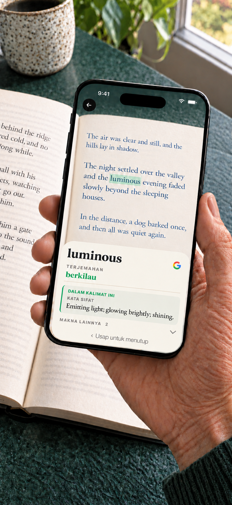

Booktionary · iPhone · Android
Kamus kamera untuk buku cetak
Kata yang belum Anda kenal tidak perlu memutus keseruan membaca. Arahkan kamera ponsel ke kata itu, temukan artinya, lalu lanjutkan membaca. Tidak perlu mengetik.
iPhone · iOS 17+ / Android 8.0+ · $1.99 USD

Android
Kamus bahasa Inggris sudah disertakan. Unduh kamus lain dan terjemahan kata sebelum membaca; sumber yang terpasang dapat digunakan tanpa internet. Tidak perlu akun.
Sekali beli mencakup semua kamus dan paket terjemahan kata yang tersedia. Tanpa langganan atau pembelian dalam aplikasi.
Pilihan makna berdasarkan konteks untuk buku Inggris
Pada ponsel kompatibel dengan Android 12 atau lebih baru dan minimal RAM 8 GB, model opsional pada perangkat dapat memilih makna kamus untuk buku Inggris. Unduh model secara terpisah melalui Google Play. Aplikasi memeriksa kinerja dan sumber daya yang tersedia sebelum mengaktifkannya; syarat minimum tidak menjamin ketersediaan. Pilihan muncul hanya jika siap saat definisi dibuka. Pencarian kamus biasa tetap bekerja tanpa model.
Kamera dan privasi
Gambar kamera dan teks yang dikenali diproses pada perangkat. Google ML Kit mengumpulkan data diagnostik teknis dan penggunaan. Unduhan mengirim informasi koneksi biasa ke penyedia. Jika Anda memilih pencarian Google, kueri dikirim ke browser dan Google serta memerlukan internet. Lihat kebijakan privasi Android.
Memerlukan Android 8.0 atau lebih baru dan kamera.
Sebelum mulai
Pilih bahasa buku, arahkan kamera ke sebuah kata, lalu tahan sebentar. Geser definisi untuk melanjutkan. Cakupan kamus dan terjemahan kata bervariasi. Internet diperlukan untuk melihat dan mengunduh sumber daya bahasa. Sentuh dan tahan kata dalam definisi untuk mencarinya di kamus, menyalinnya, atau mencarinya di Google. Setelah itu, kembali ke entri semula. Anda juga dapat mencari kata yang dipindai langsung di Google.
iPhone · Unduh sekali. Baca offline.
Kamus bahasa Inggris sudah tersedia di aplikasi. Unduh kamus lain, terjemahan kata, dan model terjemahan sesuai kebutuhan. Sumber daya yang terpasang dapat digunakan offline. Tidak perlu akun. Pencarian Google bersifat opsional, membuka browser, dan memerlukan internet. Teks pencarian dikirim ke Google hanya saat Anda memilih tindakan ini. Gambar kamera tetap berada di iPhone Anda.
Sekali beli mencakup semua kamus dan paket terjemahan kata yang tersedia. Tanpa langganan atau pembelian dalam aplikasi.
iPhone · Temukan makna sesuai kalimat
Satu kata bisa memiliki beberapa arti. Pada perangkat yang didukung, Booktionary menggunakan teks di sekitarnya untuk membantu menampilkan makna kamus yang sesuai terlebih dahulu. Makna lainnya tetap bisa dilihat.
iPhone · Lebih mudah membaca buku bahasa Inggris
Tampilkan terjemahan kata dalam bahasa Indonesia di samping definisi bahasa Inggris. Anda juga dapat mengaktifkan terjemahan definisi dan beralih antara bahasa Inggris dan Indonesia. Unduh model bahasa yang diperlukan sebelum membaca.

Kamus untuk buku dalam 24 bahasa
Bahasa Belanda, Ceko, Denmark, Indonesia, Inggris, Italia, Jepang, Jerman, Korea, Kurdi (Kurmanji, aksara Latin), Melayu (Rumi), Norwegia Bokmål, Polandia, Portugis, Prancis, Rumania, Rusia, Spanyol, Swedia, Thai, Tionghoa (Sederhana dan Tradisional), Turki, Ukraina, dan Vietnam.
iPhone · Kata bahasa Inggris dapat diterjemahkan ke bahasa lain dalam daftar ini, serta bahasa Yunani. Pemindaian buku berbahasa Yunani tidak didukung. Bahasa Kurdi mencakup Kurmanji dengan aksara Latin, bukan Sorani; bahasa Melayu mencakup Rumi, bukan Jawi. Terjemahkan kata ke bahasa Inggris dari seluruh 23 bahasa buku yang didukung selain bahasa Inggris. Terjemahan definisi ke bahasa Inggris bersifat opsional jika model terjemahan yang kompatibel tersedia.
- EnglishSudah tersedia
- FrançaisUnduh kamus
- EspañolUnduh kamus
- PortuguêsUnduh kamus
- ItalianoUnduh kamus
- DeutschUnduh kamus
- DanskUnduh kamus
- NederlandsUnduh kamus
- Norsk (bokmål)Unduh kamus
- РусскийUnduh kamus
- SvenskaUnduh kamus
- PolskiUnduh kamus
- ČeštinaUnduh kamus
- 日本語Unduh kamus
- ไทยUnduh kamus
- RomânăUnduh kamus
- Tiếng ViệtUnduh kamus
- TürkçeUnduh kamus
- Bahasa IndonesiaUnduh kamus
- 中文 · 简体 / 繁體Unduh kamus
- 한국어Unduh kamus
- УкраїнськаUnduh kamus
- Kurdî (Kurmancî)Unduh kamus
- Bahasa MelayuUnduh kamus
Bantuan
Cari kata cepat sambil membaca